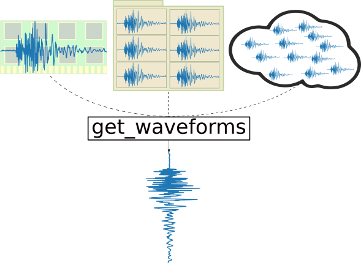

Added Obspy Methods¶
Obsplus adds methods to existing obspy data structures in order to “unify” the data-requesting interfaces (ie the get_whatever methods). This is done dynamically upon importing obsplus using a technique known as monkeypatching. You can then write source-agnostic code; any seismological data source, from in-memory obspy data structures, a directory of files, or a remote resource like IRIS can be treated the same way. If the data sources need
to be changed it can be done seamlessly.
The following figure demonstrates this concept with waveform data. In-memory (Stream), on disk (WaveBank), or remote (Client) all share the get_waveforms method.

[1]:
# get a catalog, stream, and inventory to play with
import obspy
cat = obspy.read_events()
st = obspy.read()
inv = obspy.read_inventory()
Catalog¶
[ ]:
[ ]:
Inventory¶
[ ]:
[ ]:
Stream¶
[ ]:
[2]:
t1 = st[0].stats.starttime + 10
Getting client_like objects¶
Obsplus has a few convenience functions for getting client-like objects (meaning they implement the appropriate get_whatever methods) from various sources. For example, the object returned after calling get_waveform_client is guaranteed to have a get_waveforms method or the function will raise a TypeError. The input could be a single miniseed file, a directory of waveforms files, a Stream object, or a valid waveform client.
For example:
[3]:
import tempfile
from pathlib import Path
from obspy.clients.fdsn import Client
from obsplus import get_waveform_client
cl = Client()
[4]:
# get waveform client from various sources
[ ]:
[5]:
# save a single file to disk
p = Path(tempfile.mkdtemp()) / "stream.mseed"
p.parent.mkdir(exist_ok=True, parents=True)
st.write(str(p), "mseed")
# get client from a single file
[6]:
# create a directory of waveforms, get a client
p = Path(tempfile.mkdtemp())
p.mkdir(exist_ok=True, parents=True)
for num, tr in enumerate(st):
tr.write(str(p / f"{num}.mseed"), "mseed")
# get client from waveform directory
[7]:
# A TypeErorr is raised if get_waveform_client cannot get a waveform_client
try:
get_waveform_client(cat)
except TypeError:
pass
![Logo of ObsPlus [ 0.3.1.dev5+gd97ee32 ]](../../_static/obsplus_panda.png)